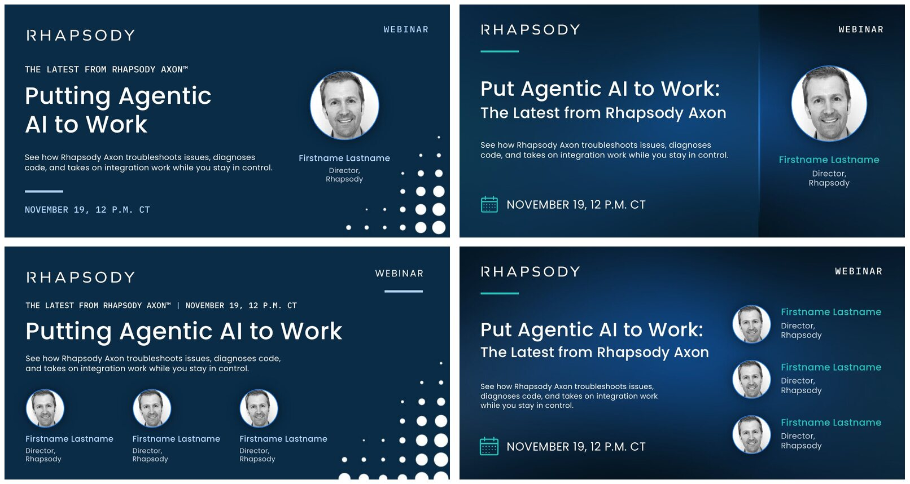

Rhapsody’s social graphics are built from approved templates in Adobe Express, in the Rhapsody brand. They are the reference for every social graphic, whether you edit the template in Express or design in Claude. Start from the template, keep its layout, and change only the words, photos, logos, and speakers. Each template holds several options as separate pages; pick the one that fits the content.
Rules for every template
Size: 1200 × 628 px (LinkedIn feed and link image). Export at 2× where the platform allows it.
Headlines: Title Case, Poppins Medium, two lines at most. No end period on a one-sentence headline, even though some template pages still show one (a designer is removing them). A headline can take a subtitle line after a colon, as on the webinar templates.
Eyebrow: one IBM Plex Mono label in all caps that names the post type (PRODUCT RELEASE, WEBINAR, CUSTOMER CASE STUDY, EMPLOYEE SPOTLIGHT). Light blue or teal on navy; light blue or white on Rhapsody Blue; navy on light gray.
Logo: all white on navy, Aurora Glow, and Rhapsody Blue; the primary logo on light gray. Once per graphic. With a customer or partner, use the co-brand lockup: Rhapsody logo, a thin plus, then their logo.
People: real speakers and employees are circular headshots in the Rhapsody Blue ring and may be black and white. Names and titles exactly as the person approves them: name, then title (and company).
Dots and shapes: the dot and circle artwork in these templates (the stepped white dots on the webinars, the multicolor dot column on employee spotlight option 3, the big circles, the dot arc on the event) is approved as it appears here. Keep it where the template puts it. This is an exception for these templates only; elsewhere use the fluid dot masters.
Buttons: only the product release template carries a button. Other social graphics have none; the post copy and link carry the call to action.
Check at phone size (about 350px wide in a feed) before posting. Cut words rather than shrinking type.
Option 1. Navy into Rhapsody Blue. Eyebrow, headline, description, a Rhapsody Blue pill button bottom left, all-white logo bottom right.
Option 2. Rhapsody Blue. Logo top left, eyebrow top right, a white pill button, and a graphic on the right: the product badge, or a product screenshot in its place.
Webinar
1 speaker · 2 speakers · 3 speakers in Adobe Express · two options each. Pick the file that matches the number of speakers.

Option 1 (flat navy), 1 speaker. Logo top left, WEBINAR top right, a mono series line (“THE LATEST FROM RHAPSODY AXON™”), headline, description, date in light-blue mono. Stepped white dots bottom right.
Option 2 (Aurora Glow), 1 speaker. Logo with a short teal rule, headline and subtitle, the teal calendar icon and date. The speaker sits in a darker panel at right, name in teal.
Option 1, 3 speakers. The series line and date share one mono line; the headline runs on one line; speakers sit in a row.
Option 2, 3 speakers. Speakers stack in a column at right, names in teal.
On navy, speaker names are light blue (option 1) or teal (option 2); titles are white. Headshots are black and white in the Rhapsody Blue ring.
Event (trade shows and conferences). Navy. Eyebrow “MEET RHAPSODY AT [EVENT NAME]”, logo top right, headline, one-sentence description, then the booth number and the date and time. Multicolor dot arc at right.
This is the template’s first page. Check the file in Express for any other options.
Option 1 (stat, light). Photo left; light gray panel with the co-brand lockup (primary logo), eyebrow, one big stat in navy, what it measures, and the story title.
Option 2 (stat, navy). A photo of the customer’s site left; navy panel with white logos, teal eyebrow, a big white stat, and the story title.
Option 3 (headline, Aurora Glow). Co-brand lockup, a two-line headline, the teal eyebrow at the bottom. For stories without a single stat.
Option 4 (headline, Rhapsody Blue). Big navy, white, light blue, and teal circles; navy headline up to three lines; eyebrow bottom right.
Stats are the customer’s verified figures, written the way the case study states them. Use the customer’s own logo files, in white on navy and blue.
Option 1 (light). Quote on light gray, name in Rhapsody Blue; navy panel with eyebrow, portrait, and logo.
Option 2 (navy with circles). White quote, name in teal, portrait at right over blue, teal, and white circles.
Option 3 (navy and blue). White quote with the multicolor dot column; Rhapsody Blue panel with eyebrow, portrait, name, and title.
Quotes run five lines at most. Cut a long quote rather than setting it smaller.
Other templates in the set
The same Express workspace also holds Quote, Proof Stat, Award, and New Content social templates, and the email signature banners (see Email signature). Ask marketing before using a template that isn’t shown on this card.
Do
Start from the Express template, or match it exactly in Claude.
Keep one eyebrow, one headline, and the logo once.
Keep the dots and shapes where the template puts them.
Don’t
End a one-sentence headline with a period.
Add a button anywhere but the product release.
Move the template’s dot art onto other work, or add a second device.
Source: the Adobe Express social templates (November 2026). PDF exports are in examples/social/express/ in the design system repository.